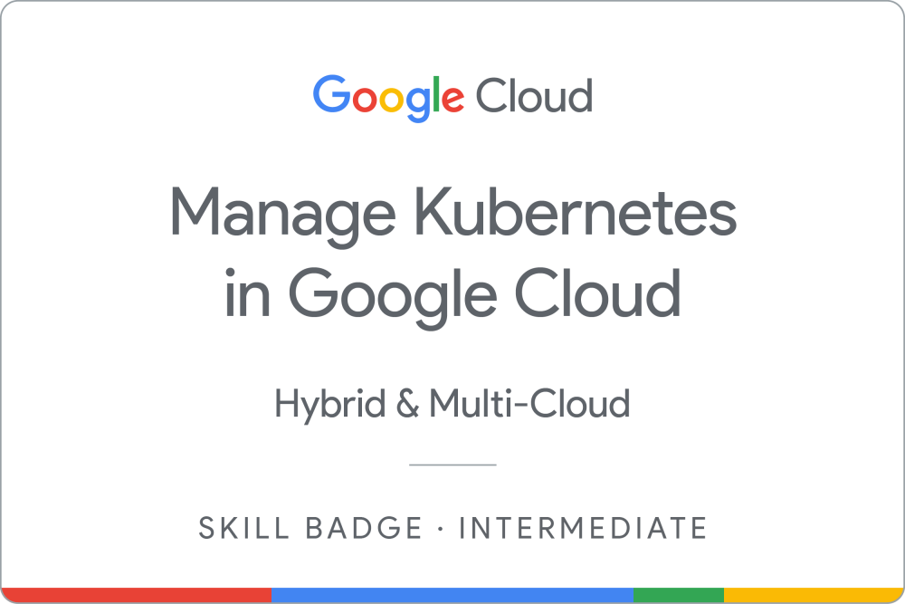
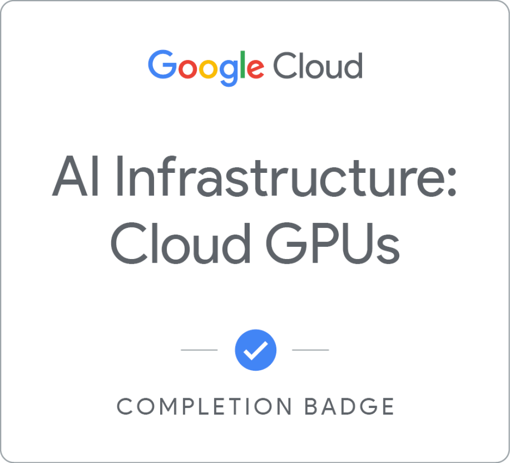
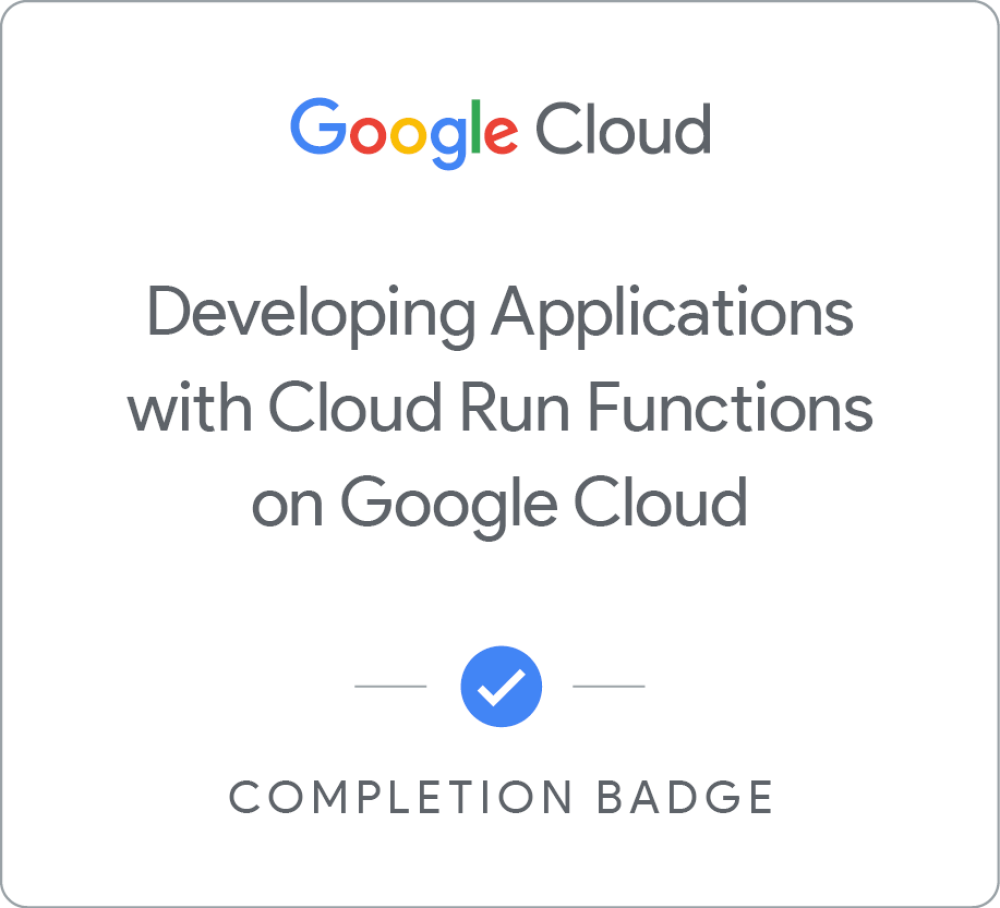
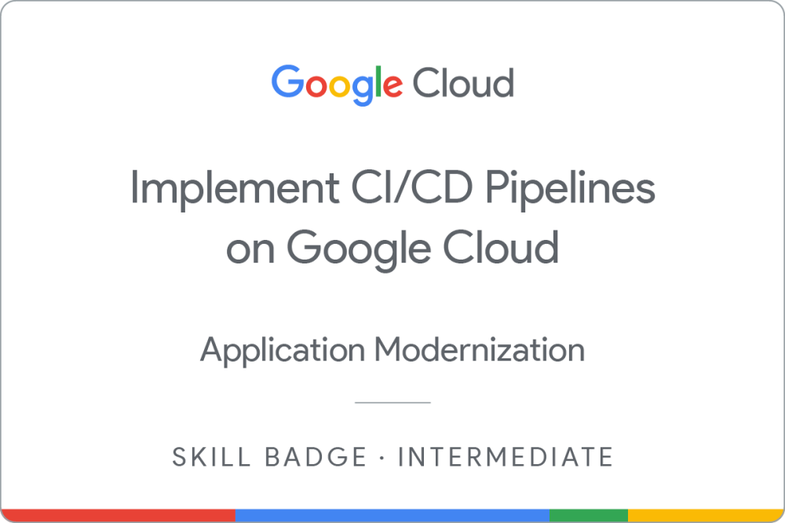
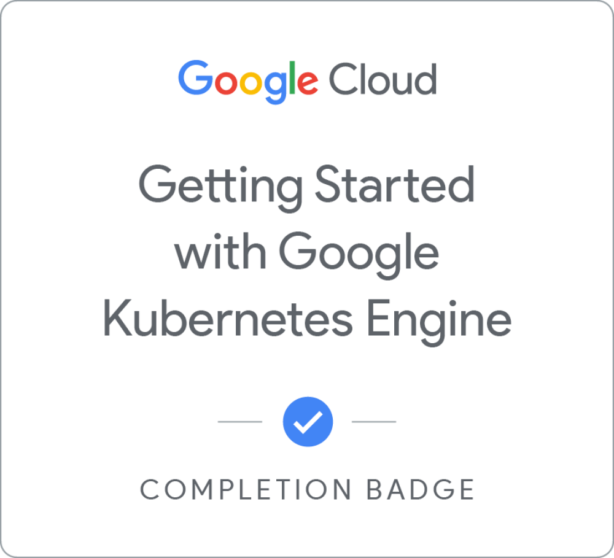
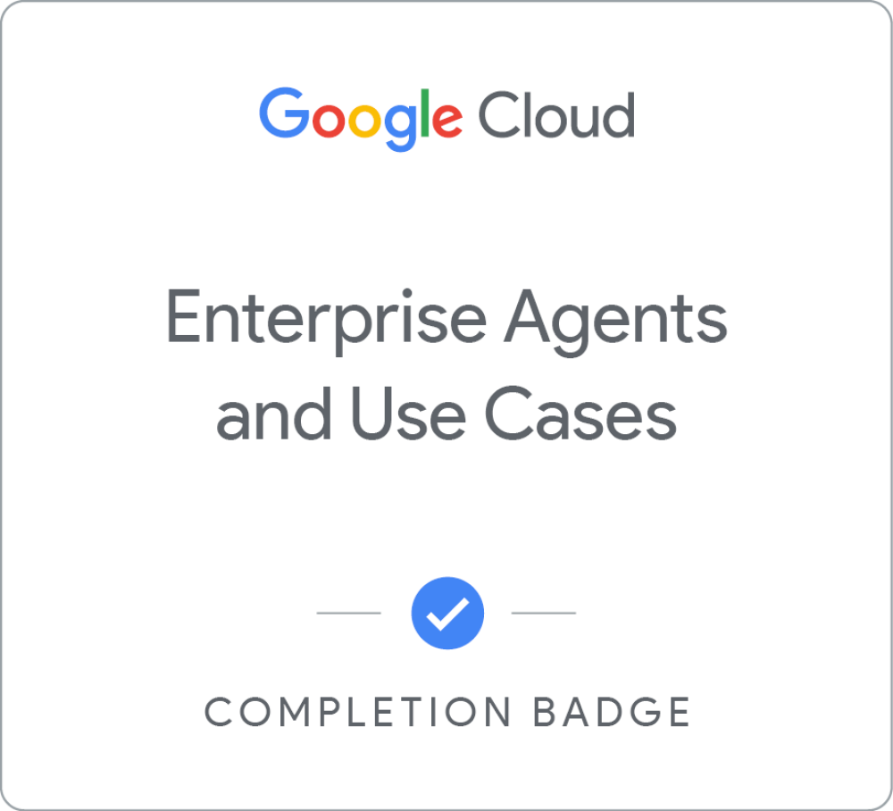
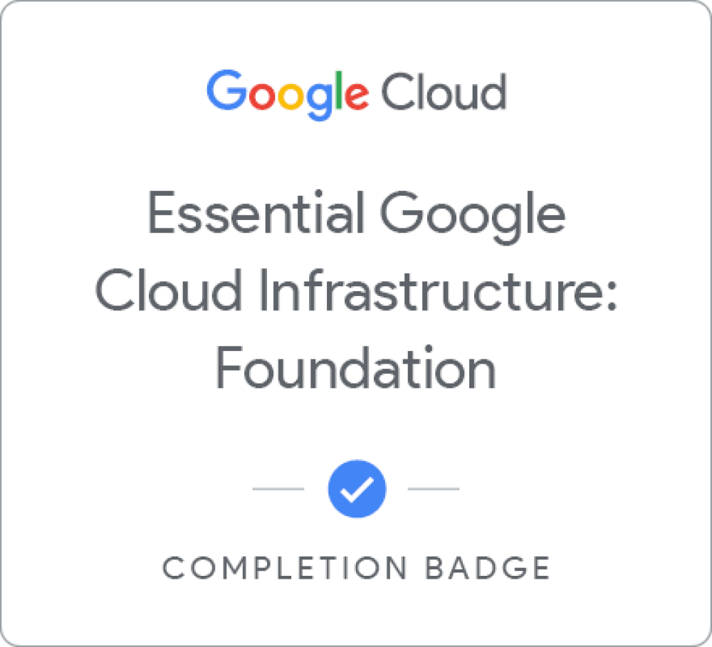
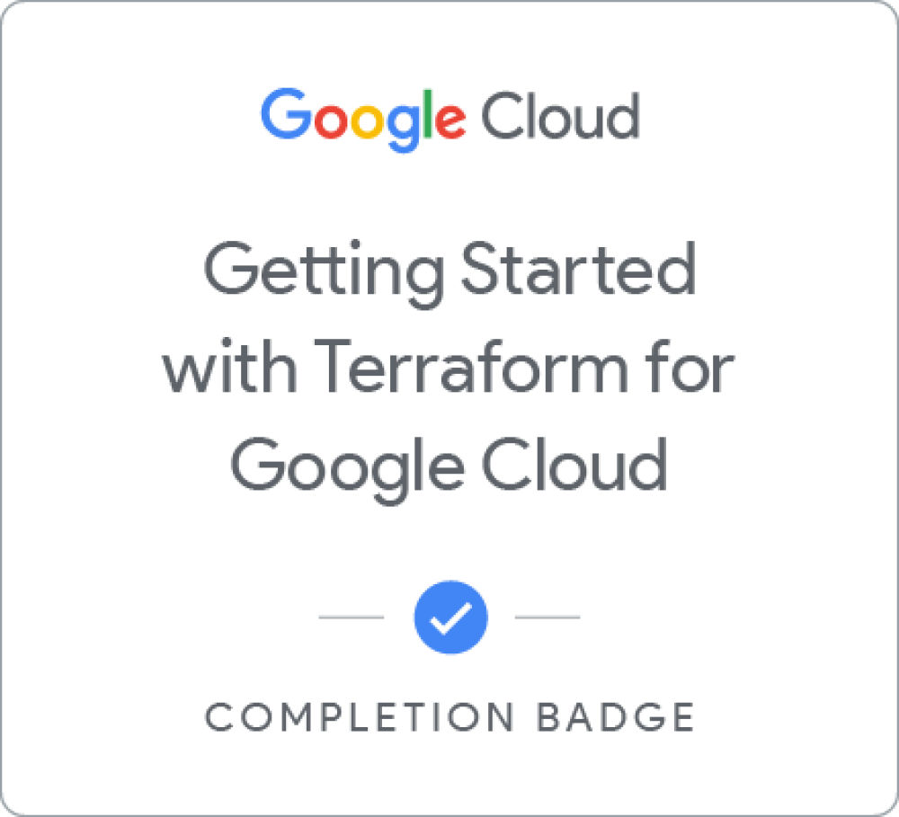

Cloud & Infrastructure
Scalable foundations across all three major clouds, defined and managed as code.
AWS
Azure
GCPTerraformCloudFormationVPC / VNetEKS
Hi, I’m Suraj Bodade. A multi-cloud DevOps
architect
turning complex infrastructure into resilient,
secure, and scalable platforms.
Years shipping infrastructure
Microservices on GitOps
Service uptime achieved
Faster environment setup
The right tools, thoughtfully connected.
From the first commit
to production at scale.
Scalable foundations across all three major clouds, defined and managed as code.
Repeatable releases. Confident rollbacks. A faster path from development to production.
Security built into every layer, with the visibility to keep critical systems healthy.
I bridge the gap between development, security, and operations. With 8+ years in DevOps, I build infrastructure that gives teams the confidence to ship and businesses the room to grow.
Today, I lead a team of five DevOps engineers at XCaliber Health, bringing together reliable delivery, cloud cost optimization, and compliance. I also drive secure enterprise AI adoption, from LLM access controls to model cost visibility.
From hands-on engineering
to leading the platform forward.
Leading five DevOps engineers and shaping the infrastructure roadmap. Driving secure enterprise AI onboarding, access governance, and automated compliance controls.
Provisioned 9+ cloud environments with Terraform and implemented ArgoCD’s apps-of-apps pattern for 40+ microservices. Optimized EKS costs by 30% in the first three months, followed by a further 55% reduction over six months.
Built on-demand infrastructure for 5+ product teams, automated delivery with GitHub Actions and ArgoCD, and strengthened security with SOC2 initiatives, SonarQube, and secrets scanning.
Engineered AWS production infrastructure for 200K+ monthly users. Moved releases from weekly to daily, provisioned secure Azure infrastructure, and established monitoring and automated configuration across teams.
Associate · SAA-C02
AWS CERTIFIEDCLF-C02
AWS CERTIFIEDCertified Kubernetes Administrator
CKADeclarative delivery & GitOps foundations
GITOPS CERTIFICATIONScaling GitOps practices
GITOPS CERTIFICATIONCloud Economics Accreditation
ACCREDITATIONAccreditation (Technical)
ACCREDITATIONMigration Ambassador Foundations (Business)
FOUNDATIONSRecent learning across Kubernetes, CI/CD, Terraform, serverless applications, and AI infrastructure. Each badge links to its public achievement record.

GOOGLE SKILLSEarned Aug 30, 2026 EDT
VIEW ACHIEVEMENT ↗
GOOGLE SKILLSEarned Aug 30, 2026 EDT
VIEW ACHIEVEMENT ↗
GOOGLE SKILLSEarned Aug 29, 2026 EDT
VIEW ACHIEVEMENT ↗
GOOGLE SKILLSEarned Aug 18, 2026 EDT
VIEW ACHIEVEMENT ↗
GOOGLE SKILLSEarned Aug 16, 2026 EDT
VIEW ACHIEVEMENT ↗
GOOGLE SKILLSEarned Aug 3, 2026 EDT
VIEW ACHIEVEMENT ↗
GOOGLE SKILLSEarned Aug 2, 2026 EDT
VIEW ACHIEVEMENT ↗
GOOGLE SKILLSEarned Jul 19, 2026 EDT
VIEW ACHIEVEMENT ↗From resilient cloud platforms to confident releases, I help teams turn infrastructure challenges into progress.
Hiring for your team or have a project in mind?
I’d love to hear what you’re building.